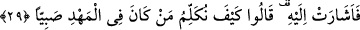
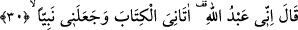

Orada sevgilinin gül bahçesinden reyhanlar bitsin!
Peygamberimiz nasıl Rahmân’ın kokusunu Yemen’den aldı ise,
Sen de benim sevgilimin ebedîlik kokusunu bul!
29. (Meryem), çocuğu gösterdi. Dediler ki: “Beşikteki çocukla nasıl konuşuruz?”
Meryem, “çocuğu gösterdi.” Yâni Meryem, İsa’ya işâret etti ki onunla konuşsunlar,
kendilerine cevap versin ve onun cevabı Meryem’in lehine bir delil olsun. Anlaşılan o
zaman Meryem nezrini/adağını açığa vurdu ve insanlarla konuşmaktan uzak olduğunu
belirtti.
Meryem’in cevabını yadırgayarak “dediler ki: “Beşikteki çocukla nasıl konuşuruz?”
Biz daha önce akıllı bir kimsenin anne kucağında, süt emen bir çocukla konuştuğunu
görmedik. Çünkü çocuk, konuşulanı anlayamaz ve cevap veremez.
30. (Çocuk) dedi ki: “Ben Allâh’ın kuluyum, (O) bana kitabı verdi, beni
peygamber yaptı.”
Bu âyet, mukadder bir sorunun cevabıdır. Sanki şöyle denilmiştir: “Bundan sonra ne
oldu?” denilince İsa da gayet açık bir dille “dedi ki: Ben Allâh’ın kuluyum” Böylece
Hz. İsa daha ilk konuşmasında hem hristiyanlardan kendisinin Rab olduğunu iddiâ
edenleri reddetmek ve Allah’tan töhmeti kaldırmak üzere kulluğunu ikrâr etti. Hem de
annesinden zinâ ithamını kaldırmayı ifâde etmiş oldu. Çünkü Allah, onun gibi bir çocuğu
bir fâhişeye vermez.
Cüneyd’in: “Ben kötülük, tamahkârlık ve şehvetin kulu değilim.” sözünde de
insanlığın en güzel isminin “kulluk” olduğuna işâret vardır.
Fakir (Bursevî) der ki: Allah ruhunu şâd etsin, şeyhimden duyduğuma göre, Abdullah
ismi
Abdurrahmân’dan,
Abdurrahmân
Abdurrahîm’den,
Abdurrahîm
de
Abdülkerîm’den üstündür. Bundan dolayı Rasûllullah (s.a.) Abdullah, Abdulhayy ve
Abdulhak gibi isimleri en üstün isimler olarak saymıştır. Çünkü ilâhî isimlerin bir kısmı
zâtı, bir kısmı sıfatları bir kısmı da fiilleri gösterir. Birincisi ikincisinden, ikincisi de
üçüncüsünden daha üstündür.
İsa’yı konuşturan Zekeriyya (a.s.) olduğu söylenmiştir. Allah dört çocuğa dört özellik
vererek ikrâm etmiştir: Yusuf’a kuyuda vahiy, İsa’ya beşikte konuşma, Süleyman’a
çocukluğunda anlayış ve Yahyâ’ya da hikmet vermiştir.